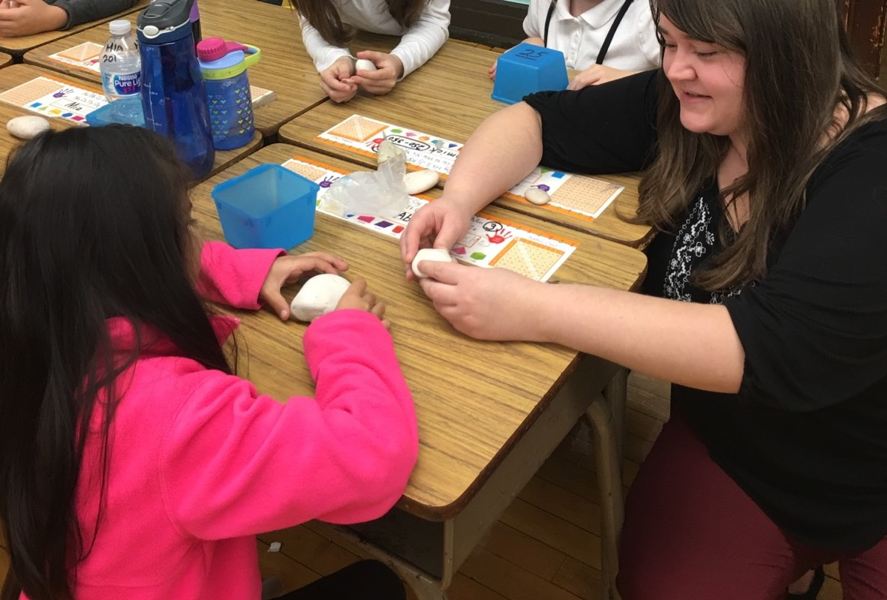

Welcome to my online portfolio! My name is Amber Sanfilip and I am currently attending Northeastern Illinois University's early childhood education undergraduate program. My minor and endorsement will be in teaching english as a second language. I expect to be completed with both by the Fall of 2018. I discovered my passion for teaching young children while I was in highschool, where I particpated in the Big Brother/Sister club and worked in an after school program. Ever since then I have been fascinated with how children learn and grow. I am passionate about working with children, and through my higher education have recieved the skills and knowledge to help them reach their full potential.
I believe the purpose of education is to guide children in their academic, developmental, and societal growth. As teachers we must lead our students to new discoveries and have a positive impact on their physical and mental development. My personal philosophy of education is that it is important to understand Individual talents, have students be active learners, include families in the learning process, and build rapport with students.
Children have individual talents and interests. As educators it is important for us to identify and encourage their individuality. It is important to support their strengths, instead of focusing on their weaknesses. If teachers encourage young children’s talents, the child will have something to be proud of. This will eventually lead to high self-esteem and a positive outlook on future education.
Secondly I believe that children should all be active learners in the classroom. Simply meaning that they are engaged in the activity, not just sitting idly by. This helps the child fully comprehend the material, and really gives them a moment to “think” and make decisions. For example, when reading a book to a child you could stop mid-story and ask why a certain action happened, and let them respond. This is important to bring into the classroom because it teaches comprehension and problem solving skills.
I believe that young children learn best and retain information when their families are involved in the process. If you involve the family in what is being taught in the classroom, they can re-enforce at home what you are teaching in school. By sending home monthly newsletters and hanging the child’s work on the classroom walls the parents can be a part of what their child is learning. This gets the parents excited for their child’s education, and the child feels proud of their accomplishments.
At the early childhood level, I believe it is especially important to develop a strong teacher- student rapport. This may be their first time away from their families, and it is important to have a welcoming presence to the child. If they trust you, they will feel more comfortable in the classroom. If the child does not feel safe they cannot engage in the learning process. To achieve this the classroom environment and your personal presentation have to be warm and inviting.
I believe it is essential for each child’s talents to be encouraged, for children to be active learners, families to be involved in the classroom, and for the teacher-student rapport to be strong. In this way the child can successfully engage in the learning process.
I am interested in applying for a teaching position. I believe my experience, credentials, and dedication to children’s learning make me an ideal candidate for an early childhood teaching position. I will be a 2018 graduate of Northeastern Illinois University’s early childhood education program and will be licensed to teach children from infancy to third grade. I am also perusing an endorsement in Teaching English as a Second Language, which will be completed by the Fall of 2018.
Through this program I have had experience teaching preschool, first grade, and second grade in the Chicago public school system. I have also taught toddler aged children in a private daycare setting. I have learned essential skills in classroom management, informal/formal assessment, and lesson planning and implementation while following a curriculum through my classroom experiences.
I believe I would be a good fit in a school because of my experiences in a real classroom setting and the knowledge I have gained while perusing my degree. Being in the classroom has given me a first-hand experience in developing my own lessons, working cooperatively with other teachers, participating in professional development, and most importantly learning to build a rapport with many students in the early childhood setting. My experience in the teaching program at Northeastern Illinois University has provided me with knowledge of current teaching practices and procedures. While providing me with insight into the theoretical framework of children’s physical, cognitive, and social-emotional development.
I thank you for your time to review my portfolio. Please contact me at ajs.sanfilip@gmail.com with any additional questions.
Thank you,
Amber Sanfilip